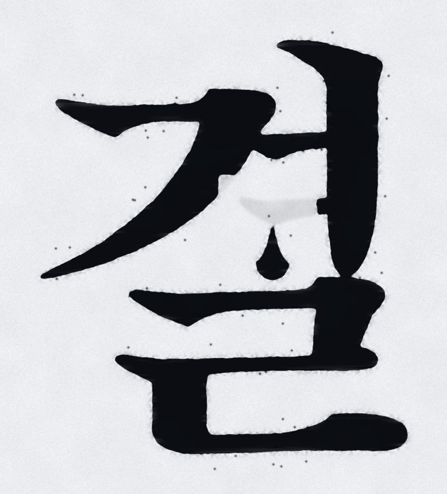
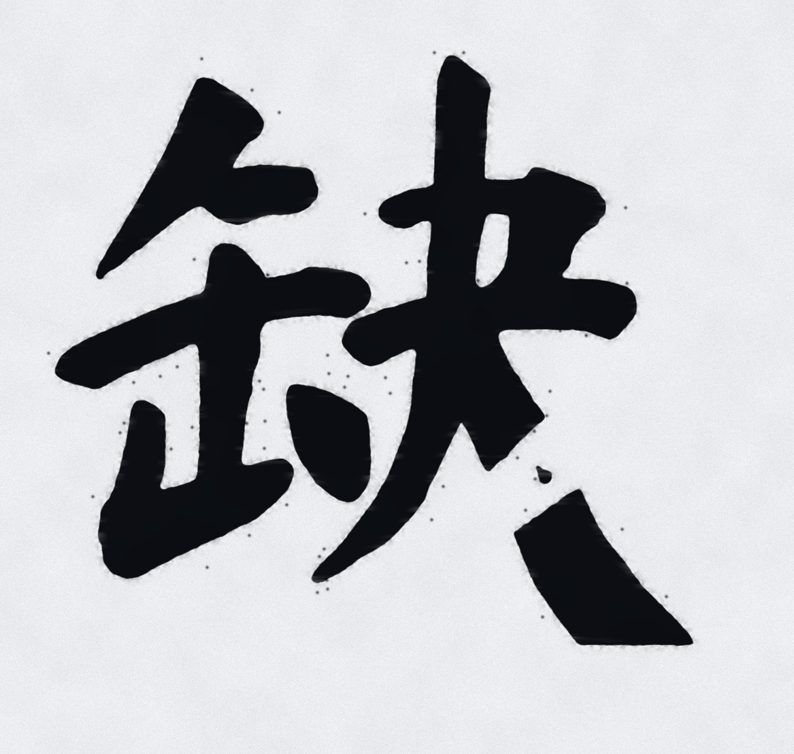
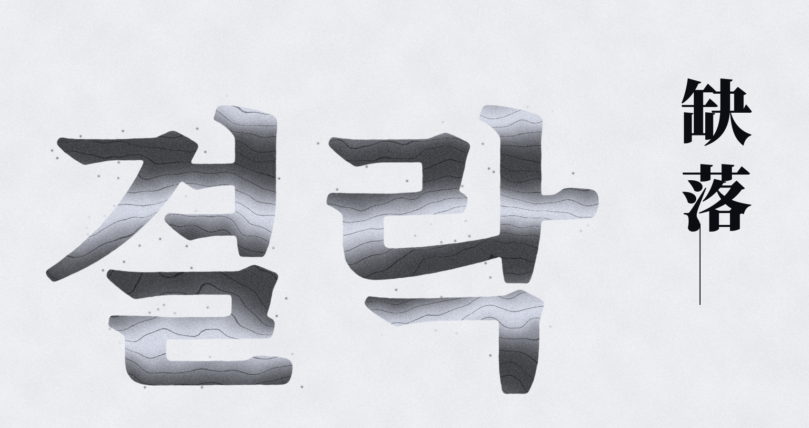
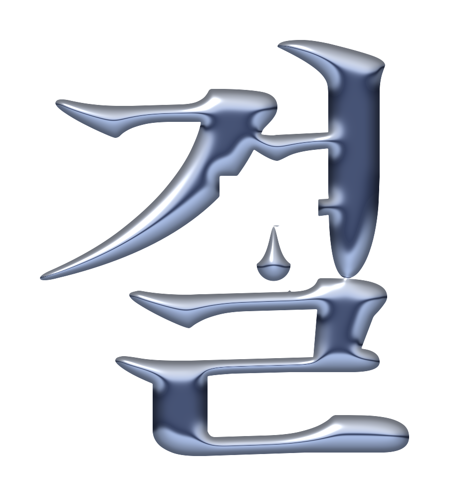
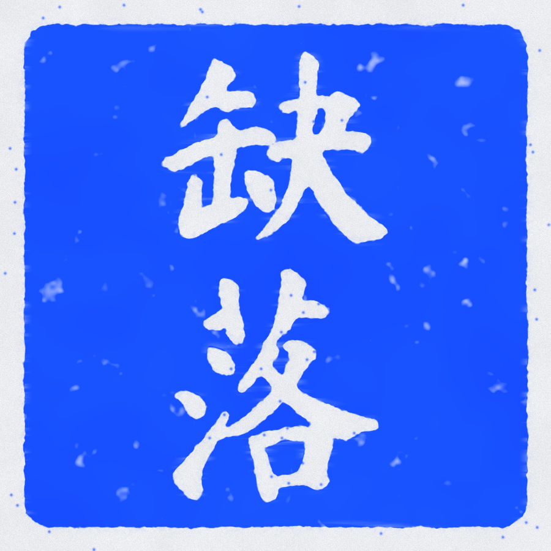
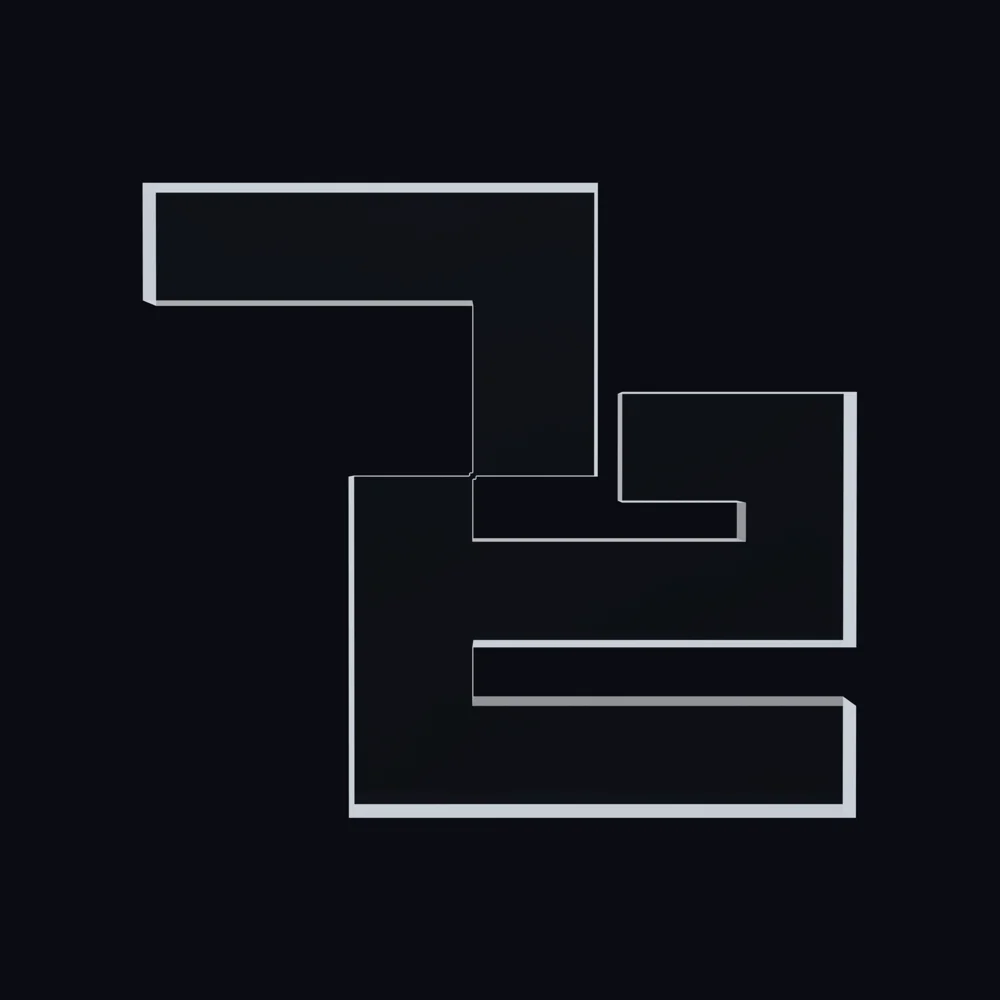
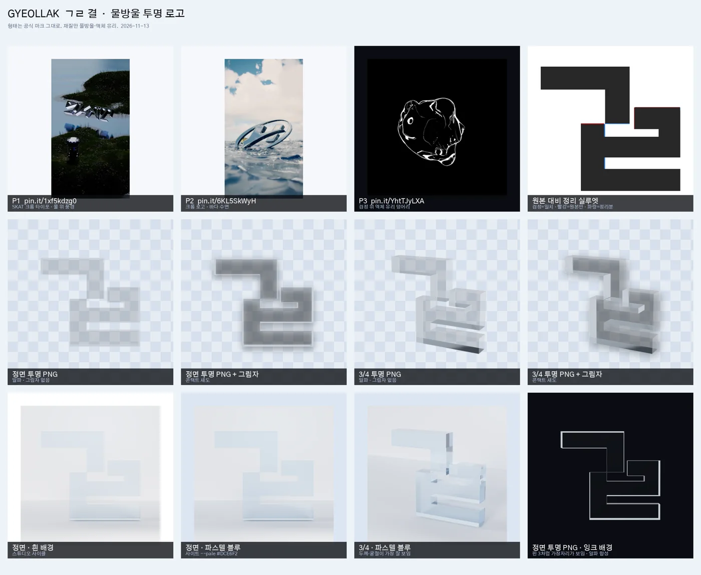

COLOPHON — 로고 · 색 · 글꼴 · 크레딧
결락(缺落) = 떨어져 나간 한 조각. 로고는 '빠진 획' 하나로 그 뜻을 보여준다. 같은 '결'을 먹·크롬·인장으로 재질만 바꿔 쓰는 시스템. 전부 무료 글꼴(Song Myung · Ma Shan Zheng · Noto Serif KR, OFL)을 바탕으로 먹 번짐을 직접 입힌 시안이라, 확정 시엔 손글씨로 다시 써서 다듬는 걸 권장.← 사이트로

ㅕ의 아래 가로획 하나를 비우고, 그 자리에 옅은 먹 자국만 남긴 뒤 물방울이 떨어진다. '빠진 조각 → 떨어지는 방울'이 한 글자 안에서 일어남. 사이트의 심연·FILM 마지막 장면에서 물방울이 모이는 모양도 이 실루엣.

缺의 오른쪽 삐침이 잘려 아래로 미끄러지고 사이에 먹방울이 튄다. 한자를 아는 사람에겐 즉시 읽히는 장치. 해외·한문 쪽 서브 마크.

굵은 명조 '결락' 안에 台中 포스터 같은 은빛 물결 띠와 가는 먹 마블링선. 옆에 세로 缺落. 포스터·공연 타이틀용 가로형.

A 실루엣을 부풀린 액체 금속으로. ETHER·和平 레퍼런스 쪽. 굿즈(아크릴, 메탈 키링, 카라비너 참) 제작 시 그대로 3D화 가능.

글자를 파낸 낙관. 결락 유일 포인트색 코발트로 찍음. 사인·CD 속지·굿즈 태그에 도장처럼 찍는 보조 표식.

투명한 물방울 안에 결이 맺힌 입체 마크. 은빛 수면 첫 화면과 같은 재질. 앞면·파스텔·검정·3/4 각도 네 가지.

회전 각도별 모음. 굿즈 3D 제작이나 스핀 영상에 그대로 쓸 수 있는 기준 시트.